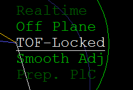
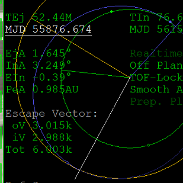
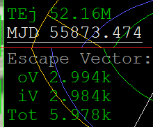
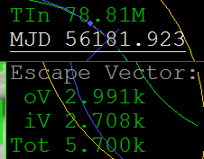
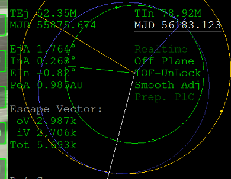

IMFD Part7 効率のよい軌道を探す
Target Interceptを使ってプランやマニューバを作成するときに、できるだけDelta Vを小さくする方法について説明します。
TEj・TInを探す
TOF-Lockedで大まかな日時を決めてから、TOF-UnLockにして微調整します。
TOF-Lockedで探す
Target Interceptを起動して、ターゲットを指定する。（今回の例では火星）
この段階ではTEjとTInの日時を変更せずそのままにしておく。
まず最初にTOF-Lockedにする。

TEjの下のMJDに移動して、Adj-10xで日時を進める（+を長押しクリックする）。
Escape VectorのTotが最小になるまで時間を進める。

TOF-UnLockで探す
TOF-UnLockにする。
ふたたびTEjの下のMJDに戻って、Totが小さくなるように日時を進めたり戻したりする。
必要に応じてAdjの倍率を変更する。

Totの値が下がらなくなったら、TInの下のMJDに移動する。
TEjと同じように、Totができるだけ小さくなるようにTInの日時を変更する。

ふたたびTEjに戻って、同じ手順を繰り返す。
またTInに戻って、同じ手順を繰り返す。
これをTotがそれ以上下がらなくなるまで続ける。
今回の例では、火星までおよそ307日かかることになる。

このようにして日時を細かく調整することで、より効率のよい軌道を探すことができます。